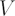
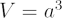
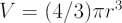
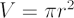
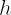
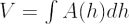
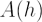

The volume of an object is a three-dimensional measurement of the space it occupies. The formulae for the volume

of common shapes are:| shape | formula | note |
| cube |  |
where |
| sphere |  |
where |
| cylinder |   |
where |
| general |  |
where is the height and  is the area of a cross-section perpendicular to as a function of |